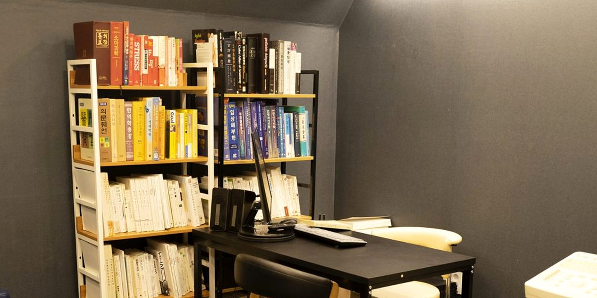

교통사고 뒤에는 응급 증상과 골절 여부를 병원에서 먼저 확인하고, 이후 남은 목·허리 통증은 사고 일시와 아픈 동작을 기준으로 살피며 사고가 난 뒤 시간이 지나서 나타나는 증상도 이어서 확인합니다.
한의원에서 함께 살필 것
- 사고 뒤 목이 굳어 고개를 돌리기 어려운 경우 목과 어깨의 긴장을 함께 살핍니다.
- 등과 허리가 뻐근해 일어설 때 불편한 경우 척추 주변 근육과 자세를 함께 살핍니다.
- 사고 뒤 몸이 쉽게 굳고 움직임이 줄어든 경우 생활 속 움직임 방법을 함께 살핍니다.
먼저 확인이 필요한 신호
- 의식이 흐려지거나 심한 두통, 구토가 있는 경우
- 팔다리에 힘이 빠지거나 저림이 심해지는 경우
- 가슴이나 배가 심하게 아픈 경우
교통사고 직후에는 크게 아프지 않다가 하루 이틀 뒤에 목이나 허리가 뻐근해지는 경우가 있습니다. 당황하지 않고 순서대로 확인하는 것이 중요합니다.
한의원에서 함께 살필 수 있는 경우
- 사고 뒤 목이 굳어 고개를 돌리기 어려운 경우 목과 어깨의 긴장을 함께 살핍니다.
- 등과 허리가 뻐근해 일어설 때 불편한 경우 척추 주변 근육과 자세를 함께 살핍니다.
- 사고 뒤 몸이 쉽게 굳고 움직임이 줄어든 경우 생활 속 움직임 방법을 함께 살핍니다.
진료실에서 이야기를 들은 뒤 어떤 방법이 맞을지 함께 정합니다.
이런 증상은 먼저 확인이 필요합니다
다음이 있으면 한의원보다 응급실이나 병원에서 먼저 진료받으세요.
- 의식이 흐려지거나 심한 두통, 구토가 있는 경우
- 팔다리에 힘이 빠지거나 저림이 심해지는 경우
- 가슴이나 배가 심하게 아픈 경우
- 목이나 허리를 전혀 움직일 수 없는 경우
- 대소변 조절이 어려운 경우
사고 직후에 골절이나 출혈이 없는지 영상 검사로 확인하는 것은 병원의 몫입니다. 한의원은 이런 확인이 끝난 뒤 남아 있는 불편을 살핍니다.
시간이 지나서 나타나는 증상도 있습니다
사고 직후에는 긴장 때문에 통증을 덜 느끼다가 며칠 뒤 다음과 같은 불편이 나타나기도 합니다.
- 목이 뻣뻣하고 고개를 돌리기 어려움
- 어깨와 등이 뭉침
- 허리가 뻐근하고 앉았다 일어날 때 아픔
- 두통이나 어지러움
- 잠이 얕아짐

한의원에서는 이렇게 여쭙니다
- 사고가 언제, 어떤 방향에서 났나요? (정면, 후방, 측면)
- 지금 가장 불편한 동작은 무엇인가요? (고개 돌리기, 앉았다 일어나기, 오래 앉아 있기)
- 처음 아팠던 부위와 지금 아픈 부위가 같은가요?
- 병원에서 받은 검사와 진단은 무엇인가요?
- 사고 뒤 잠, 소화, 기분은 어떤가요?
몸따삶잘의 눈으로 통증과 함께 잠, 소화, 평소 생활까지 함께 살핍니다. 사고 뒤에는 긴장과 불안으로 잠이나 소화가 흔들리는 경우도 있기 때문입니다.
진료는 이렇게 이어집니다
1. 사고 경위와 불편한 동작을 듣고, 목·어깨·허리의 움직임을 살핍니다. 2. 필요하다고 판단될 때 초음파 등 필요한 방법으로 살핍니다. 3. 필요하다고 판단될 때 침, 약침, 추나, 체외충격파 등을 상태에 맞게 이어서 씁니다. 4. 같은 동작으로 달라진 점을 기록하고 다음 진료에서 이어서 여쭙니다.

처음 오실 때 준비하시면 좋은 것
- 사고 일시와 경위를 간단히 적은 메모
- 병원에서 받은 검사 결과, 진단서, 영상 자료 (있다면)
- 복용 중인 약
- 보험 접수 내용 (보험 처리 방식과 범위는 접수 시 안내를 받으세요)
보험과 비용
보험 처리 여부와 범위, 본인부담금은 진찰과 접수 때 안내해 드립니다. 이 글은 일반적인 안내이며 개별 상황은 다를 수 있습니다.
자주 묻는 질문
교통사고가 나면 한의원과 병원 중 어디를 먼저 가야 하나요?
의식 저하, 심한 두통·구토, 팔다리 힘 빠짐, 가슴이나 배의 심한 통증이 있으면 응급실이나 병원을 먼저 가세요. 이런 확인이 끝난 뒤 남은 통증은 한의원에서 살필 수 있습니다.
사고 직후에는 안 아팠는데 며칠 뒤에 아픈 것도 상담할 수 있나요?
네. 사고 뒤 시간이 지나서 나타나는 목·어깨·허리의 불편도 사고 일시와 아픈 동작을 기준으로 살핍니다.
처음 갈 때 무엇을 가져가야 하나요?
사고 일시 메모, 병원 검사 결과나 진단서, 복용 중인 약, 보험 접수 내용을 가져오시면 도움이 됩니다.
보험 처리는 어떻게 되나요?
보험 처리 여부와 범위, 본인부담금은 진찰과 접수 때 안내해 드립니다.
이 글은 일반적인 건강 정보이며 개인의 진단이나 치료를 대신하지 않습니다. 증상이 있거나 복용 중인 약이 있다면 진료를 통해 확인하세요. 치료 효과는 개인마다 다를 수 있습니다.
좋은꿈참사랑한의원 노량진점은 재진 때 지난번 이야기부터 이어서 여쭙니다. 진료시간과 예약은 오시는 길에서 확인하세요.